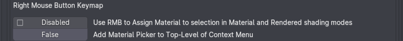
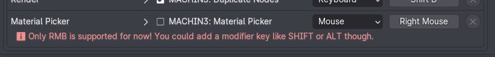
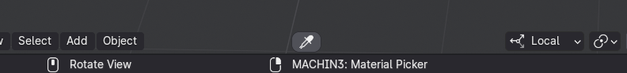
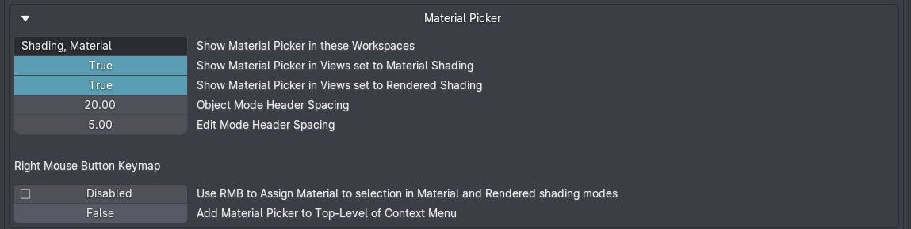

Material Picker
shortcut RIGHTMOUSE NOTE: disabled by default! see video for details
The Material Picker does three things:
- It picks a material for you to work on in the Shader Editor directly from the 3D view, without you having to select an object and finding the correct material from the object's material stack.
- It assigns a material to any object or face selection, by picking it from another object in the 3D view.
- It assigns a material from the asset browser to multiple objects through individual sequential picks, or all at once.
Right Mouse Keymap
The default RIGHTMOUSE keymap likely conflicts for many users with Blender's native mapping for the context menu.
This is why I chose to leave it deactivated by default, but I recommend you enable it to try it. There is more info below on how you can make it work for you.
You can enable it in two ways:
-
in the General tab of the addon preferences 
Note
If you leave it disabled, you can choose to add the Material Picker to the top of the Object Mode context menu instead!

-
in the Keymaps tab of the MACHIN3tools addon preferences 
Keep in mind
The tool is built in a way to work with RIGHTMOUSE as the keymap to invokeRMB press and finishRMB release the tool.
So mapping it to something other than RIGHTMOUSE is not recommended at this point.
You are free to add a modifier key however, if you want to keep RIGHTMOUSE exclusively for your context menu.
Material Picker Context
Note that even when enabled, RIGHTMOUSE will only ever invoke the Material Picker if you are in a shading mode that displays materials, such as MATERIAL or RENDERED shading.
It can also invoke in SOLID shading, but only if your have MATERIAL chosen as the color_type.
Furthermore, if you don't have a Shader Editor or Asset Browser in the current workspace, while also not having any object or face selection, then Material Picker will also not invoke.
In these cases RIGHTMOUSE will be passed through to Blender and do what it would otherwise do, like open the context menu, if that is in your keymap.
Button

The button to call the tool is available on all 3D views that show materials:
- Material shading
- Rendered shading
- Solid shading, if Material is chosen as the color type
Preferences
